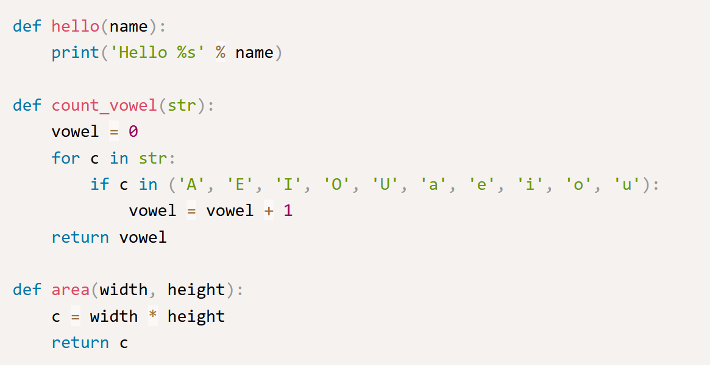
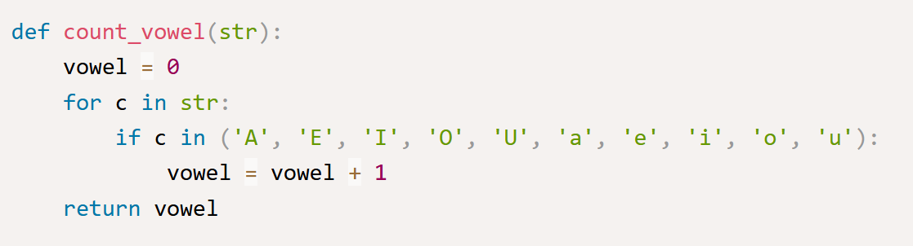
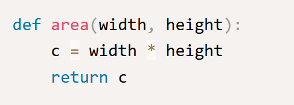
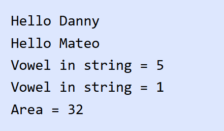
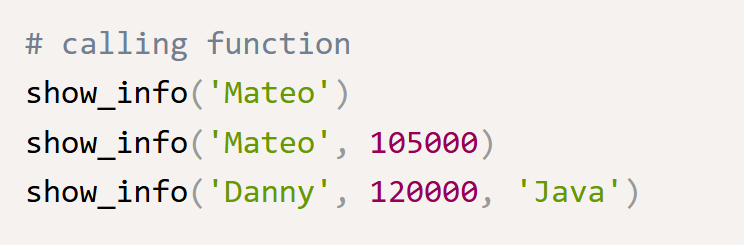
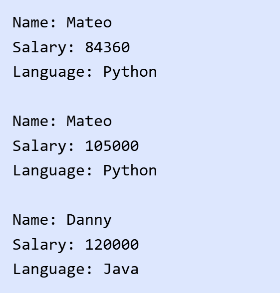
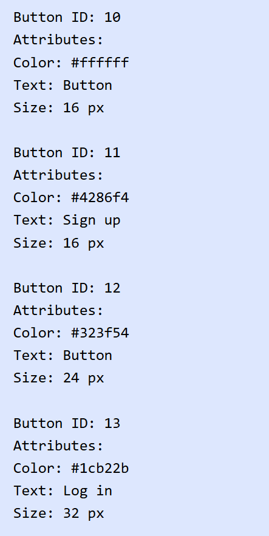
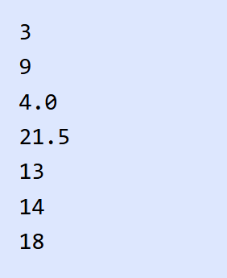
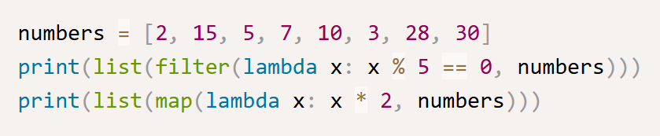
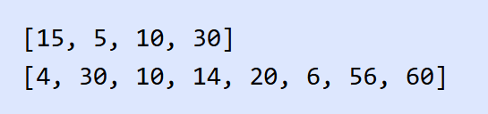

ในบทนี้ คุณจะได้เรียนรู้เกี่ยวกับฟังก์ชันในภาษา Python เราจะพูดถึงการสร้างและการใช้งานฟังก์ชันในเบื้องต้น และการเรียกใช้งานฟังก์ชันในรูปแบบต่างๆ ที่สำคัญ เช่น Default Argument และ Keyword Augment และมากไปกว่านั้น เราจะแนะนำให้คุณรู้จักกับ built-in ฟังก์ชันในภาษา Python
ฟังก์ชัน (Function) คือส่วนของโค้ดหรือโปรแกรมที่ทำงานเพื่อวัตถุประสงค์บางอย่าง ในภาษา Python คุณสามารถสร้างฟังก์ชันของคุณเองเพื่อให้ทำงานที่ต้องการ ในการเขียนโปรแกรมเรามักจะแยกโค้ดที่มีการทำงานเหมือนๆ กันเป็นฟังก์ชันเอาไว้ และเรียกใช้ฟังก์ชันนั้นซ้ำๆ ซึ่งเป็นแนวคิดของการนำโค้ดกลับมาใช้ใหม่ (Code reuse) นี่เป็นรูปแบบของการประกาศฟังก์ชันในภาษา Python
ในรูปแบบของการประกาศฟังก์ชันในภาษา Python นั้นจะใช้คำสั่ง def และหลังจากนั้น function_name เป็นชื่อของฟังก์ชัน และในวงเล็บ () เป็นการกำหนดพารามิเตอร์ของฟังก์ชัน พารามิเตอร์ของฟังก์ชันนั้นสามารถมีจำนวนเท่าไหร่ก็ได้หรือไม่มีก็ได้ และเช่นเดียวกับภาษาอื่นๆ ฟังก์ชันอาจจะมีหรือไม่มีการส่งค่ากลับ สำหรับฟังก์ชันที่ไม่มีการ return ค่ากลับนั้น เรามักจะเรียกว่า โพรซีเยอร์ (Procedure) ต่อไปมาดูตัวอย่างการประกาศและใช้งานฟังก์ชันในภาษา Python
ในตัวอย่าง เราได้สร้างฟังก์ชันจำนวน 3 ฟังก์ชัน ฟังก์ชันแรกมีชื่อว่า hello() เป็นฟังก์ชันสำหรับแสดงข้อความทักทายจากที่ชื่อส่งเข้ามา ฟังก์ชันนี้มีหนึ่งพารามิเตอร์คือ name สำหรับรับชื่อที่ส่งเข้ามาในฟังก์ชัน
ต่อมาฟังก์ชัน count_vowel() เป็นฟังก์ชันสำหรับนับจำนวนสระใน String ฟังก์ชันนี้มีหนึ่ง String พารามิเตอร์ ในการทำงานของฟังก์ชันนั้นเราใช้คำสั่ง For loop ในการวนอ่านค่าทีละตัวอักษรเพื่อตรวจสอบว่าเป็นสระหรือไม่ด้วยคำสั่ง in และตัวแปร vowel นั้นใช้สำหรับนับจำนวนสระที่พบใน String ในตอนท้ายเราได้ส่งค่าของจำนวนสระที่นับได้กลับไปด้วยคำสั่ง return
และฟังกชันสุดท้ายคือฟังก์ชัน area() เป็นฟังก์ชันสำหรับหาพื้นที่ของรูปสี่เหลี่ยมด้านขนาน และฟังก์ชันมีพารามิเตอร์สองตัวสำหรับความกว้างและความยาวของสี่เหลี่ยม และฟังก์ชันทำการ return ผลลัพธ์ที่เป็นพื้นที่กลับไปด้วยคำสั่ง return
หลังจากเราได้สร้างฟังก์ชันในตัวอย่างก่อนหน้าแล้ว ต่อไปเราจะมาเรียกใช้งานฟังก์ชันเหล่านั้น ในการเรียกใช้ฟังก์ชันนั้นเราจะใช้ชื่อของฟังก์ชันและส่งอาร์กิวเมนต์ให้สอดคล้องกับพารามิเตอร์ที่กำหนดไว้ในฟังก์ชัน ดังนั้นอาร์กิวเมนต์คือค่าที่ส่งเข้าไปในฟังก์ชันตอนใช้งาน ส่วนพารามิเตอร์นั้นคือตัวแปรทีกำหนดไว้ในฟังก์ชันเพื่อรับค่าจากอาร์กิวเมนต์ มาดูตัวอย่างการเรียกใช้งานฟังก์ชันในภาษา Python
ในตัวอย่าง เป็นการเรียกใช้งานฟังก์ชันที่เราสร้างขึ้น เราได้เรียกใช้ฟังก์ชัน hello() และส่งอาร์กิวเมนต์ที่เป็น String เข้าไปยังฟังก์ชัน เราเรียกใช้ฟังก์ชันนี้สองครั้ง ซึ่งนี่เองเป็นการ reuse โค้ดในการเขียนโปรแกรม
หลังจากนั้นเราเรียกใช้ฟังก์ชัน count_vowel() และฟังก์ชัน area() และส่งพารามิเตอร์ที่ถูกต้องไปยังฟังก์ชัน และเพราะว่าฟังก์ชันเหล่านี้มีการ return ค่ากลับ เราสามารถนำค่าเหล่านี้ไปใช้งานได้ต่อไป เราได้นำไปใช้กับฟังก์ชัน print() เพื่อจัดรูปแบบการแสดงผล
นี่เป็นผลลัพธ์การทำงานของโปรแกรม จากการเรียกใช้งานฟังก์ชันในภาษา Python
ในภาษา Python เราสามารถสร้างฟังก์ชันโดยการกำหนด Default Argument ให้กับฟังก์ชันพารามิเตอร์ได้ Default Argument เป็นการการกำหนดค่าเริ่มต้นให้กับอาร์กิวเมนต์ที่ส่งเข้ามายังฟังก์ชัน นั่นทำให้เราสามารถเรียกใช้งานฟังก์ชันโดยการส่งอาร์กิวเมนต์น้อยกว่าจำนวนที่กำหนดไว้ในฟังก์ชันได้ ซึ่งอำนวยความสะดวกในการใช้งานมากขึ้น มาดูตัวอย่างการสร้างและใช้งานฟังก์ชันกับ Default Argument
ในตัวอย่าง เราได้สร้างฟังก์ชัน show_info() สำหรับแสดงข้อมูลของโปรแกรมเมอร์ ข้อมูลที่จำเป็นต้องการจะแสดงนั้นมีชื่อ เงินเดือน และภาษาที่เขียน ในฟังก์ชันของเรานั้นมี 3 พารามิเตอร์ พารามิเตอร์แรก name นั้นเป็นพารามิเตอร์แบบปกติ และสองพารามิเตอร์นั้นเป็น Default Argument ซึ่งเรากำหนดค่าเริ่มต้นให้กับพารามิเตอร์โดยใช้เครื่องหมาย = ในการกำหนดพารามิเตอร์นั้น Default Argument ต้องอยู่หลังพารามิเตอร์แบบปกติเสมอ
ในการเรียกใช้งานฟังก์ชันนั้น เราต้องทำการส่งค่าอาร์กิวเมนต์สำหรับพารามิเตอร์แบบปกติเสมอ ส่วนพารามิเตอร์แบบ Default Argument นั้นเป็นทางเลือก ในตัวอย่าง คำสั่งเราเรียกใช้ฟังก์ชันโดยอาร์กิวเมนต์เพียงหนึ่งตัวเข้าไป ทำให้สองอาร์กิวเมนต์ที่เหลือที่เป็น Default Argument ใช้ค่าเริ่มต้นของมันแทน คือ 84360 สำหรับเงินเดือน และ "Python" สำหรับภาษาเขียนโปรแกรม
ต่อมาเราเรียกใช้ฟังก์ชันโดยการส่งสองอาร์กิวเมนต์เข้าไป ทำให้มีเพียงพารามิเตอร์สุดท้ายเท่านั้นที่ใช้ค่าเริ่มต้น และในคำสั่งสุดท้ายเป็นการส่งค่าครบจำนวนให้กับทุกอาร์กิวเมนต์
นี่เป็นผลลัพธ์การทำงานของโปรแกรม ในการเรียกใช้งานฟังก์ชันกับ Default Argument
ในภาษา Python เราสามารถเรียกใช้งานฟังก์ชันในรูปแบบของ Keyword Argument โดยการใช้ชื่อของพารามิเตอร์สำหรับส่งอาร์กิวเมนต์ ในการใช้งานนั้น พารามิเตอร์ต้องมีการกำหนดในรูปแบบของ Default Argument ก่อน มาดูตัวอย่างการใช้งาน Keyword Arguments ในภาษา Python
ในตัวอย่าง เราได้สร้างฟังก์ชันสำหรับการสร้างปุ่ม ในการเรียกใช้งานฟังก์ชันนั้น เราสามารถเรียกโดยวิธีการส่งแบบ Keyword Argument ได้ในรูปแบบของ argument = value และสามารถสลับตำแหน่งของอาร์กิวเมนต์ได้ และในฟังก์ชันนั้นเรามีอาร์กิวเมนต์ id ซึ่งเป็นอาร์กิวเมนต์แบบปกติ สำหรับอาร์กิวเมนต์แบบปกติในการส่งค่านั้นต้องส่งเป็นลำดับแรกเสมอ เหมือนในคำสั่งการเรียกใช้งานสองคำสั่งแรก หรือสามารถส่งแบบ Keyword Argument ก็ได้เช่นกันเหมือนในคำสั่งที่สามและสี่
นี่เป็นผลลัพธ์การทำงานของโปรแกรม เราได้เรียกใช้งานฟังก์ชันเพื่อสร้างปุ่ม 4 ปุ่มในรูปแบบต่างๆ ของการใช้ Keyword Argument
ตัวอย่างของฟังก์ชันที่มีการใช้งานในรูปแบบของ Keyword Argument ก็คือ ฟังก์ชัน print() เราสามารถเปลี่ยนตัวคั่นระหว่างอาร์กิวเมนต์ และการแสดงผลลัพธ์ในตอนท้ายของฟังก์ชันได้ โดยการใช้ Keyword sep และ end ตามลำดับ
Lambda Expressions คือ anonymous function ที่เป็นฟังก์ชันที่มีการทำงานขนาดเล็กอยู่ภายในที่สามารถมีได้เพียง Expression เดียวเท่านั้น เราสามารถสร้างโดยใช้คำสั่ง lambda เราสามารถใช้ Lambda Expressions สร้างออบเจ็คของฟังก์ชันได้ และค่า return จะเป็นค่าที่ได้จากผลลัพธ์ของ Expression ของฟังก์ชัน มาดูตัวอย่างการใช้งาน
ในตัวอย่าง เราได้สร้าง Lambda Expressions เป็นจำนวนสามฟังก์ชัน ฟังก์ชันแรกเป็นฟังก์ชันสำหรับเพิ่มตัวเลขขึ้น 1 และฟังก์ชันที่สองเป็นฟังก์ชันสำหรับหาค่าเฉลี่ยของตัวเลขสองจำนวน คุณจะสังเกตได้ว่าฟังก์ชันแรกนั้นมี 1 อาร์กิวเมนต์และฟังก์ชันที่สองนั้นมี 2 อาร์กิวเมนต์ และฟังก์ชันสุดท้ายนั้นเป็นการ return ฟังก์ชันกลับภายในฟังก์ชันอีกที และเป็นฟังก์ชันสำหรับเพิ่มตัวเลขขึ้นจำนวน n จากอาร์กิวเมนต์ที่ใส่เข้าไป
นี่เป็นผลลัพธ์การทำงานของโปรแกรม
นอกจากนี้ Lambda Expressions ยังมีประโยชน์เพื่อใช้งานกับ built-in function เช่น ฟังก์ชัน filter() และฟังก์ชัน map() ในภาษา Python มันใช้เป็นอาร์กิวเมนต์ส่งเข้าไปในฟังก์ชัน เพื่อสร้าง Expression ให้กับฟังก์ชัน มาดูตัวอย่างการใช้งาน
ในตัวอย่าง เรามีลิสต์ของตัวเลข Integer และเราได้ใช้ฟังก์ชัน filter() และฟังก์ชัน map() ซึ่งเป็นฟังก์ชันที่มีอาร์กิวเมนต์ตัวแรกเป็นฟังก์ชัน และตัวที่สองเป็นลิสต์ ในการทำงานของฟังก์ชัน filter() เราได้ใช้ฟังก์ชันกรองเอาตัวเลขที่ตรงกันกับ Lambda Expressions ซึ่งก็คือตัวเลขในลิสต์ที่หารด้วย 5 ลงตัว และในการใช้ฟังก์ชัน map() เป็นการเชื่อมโยงค่าในลิสต์ให้ตรงกับ Lambda Expressions คือการเพิ่มตัวเลขให้เป็นสองเท่า ซึ่งทั้งสองฟังก์ชันนี้ส่งค่ากลับเป็นออบเจ็ค และเราใช้ฟังก์ชัน list() เพื่อแปลงออบเจ็คให้เป็นสิสต์
นี่เป็นผลลัพธ์การทำงานของโปรแกรม